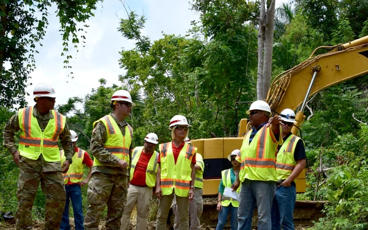

Agency Sites
Command Staff (CC)
Strategic Acquisition & Category Management (CCL)
Business Information Systems and Requirements (CB)
Facilities Engineering (CF)
Installations (CI)
Energy (CN)
Energy Express
Operations (CO)
Planning and Integration (CP)
Readiness (CX)
Environmental (CZ)
Functional Management Office (FMO)
Civilian Resources
Tools
AFCAMP IPL Validation
AFCAMP Sharepoint
AF Preventive Maint Task Lists
AF Work Management
Airfield Pavement Evaluation Gatewav
Airfield Waiver Support Tool
CE DASH Tools site
Comprehensive Planning Platform
CTO Checkbook
DCS Portal
PTO Checkbook
RPAD
Storm Damage Tracker
DOD Safe File Transfer
Emergent Requirement Requests(ERR)
Emergent Request System/ERS
FMDQS
FM Suites (UOAs)
HHQ Project Authorization Tool (PAT)
Installation Access Control Gate/AVRReporting loo
MICT Management Internal Control Toolset
MILCON/UMMC IPL Tool
Ops Flight Distribution List
UMMC Sharepoint
USORT
